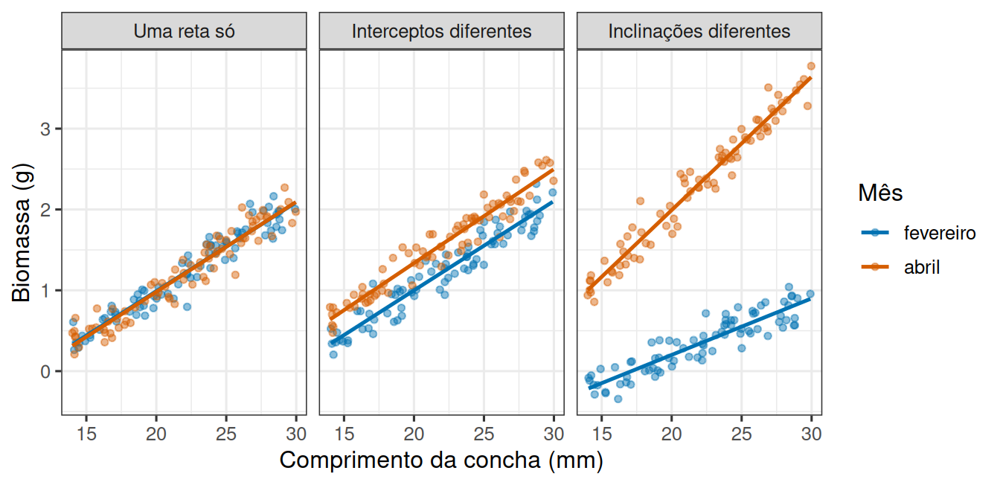
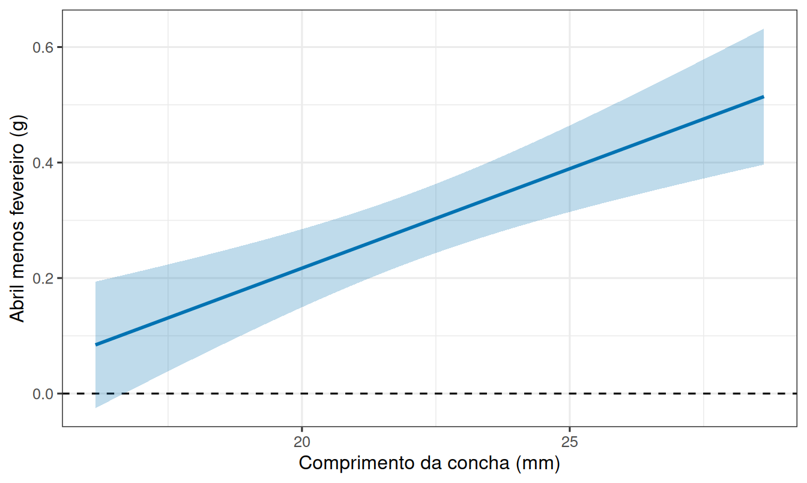
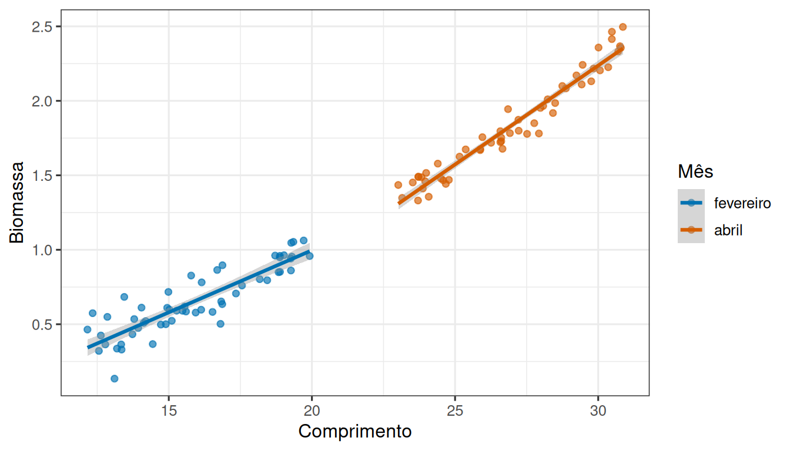

A mesma reta serve para os dois grupos?
Leitura prévia
1 Uma reta, e depois duas
Uma reta descreve bem como a biomassa de um molusco cresce com o comprimento da concha, porque uma inclinação diz quanto a biomassa esperada aumenta por milímetro e um intercepto ancora a reta na escala da resposta.
Agora suponha que os moluscos venham de dois meses de coleta. A pergunta muda de forma:
Uma única reta descreve os dois meses, ou cada um tem a sua?
Não é uma pergunta técnica. É uma pergunta biológica sobre se a relação entre tamanho e massa se mantém ao longo do ano, ou se ela própria muda com a estação.
2 Três cenários, e só três
Duas retas podem se relacionar de três maneiras, reunidas na Figura 1, e vale saber reconhecê-las antes de olhar qualquer saída de modelo.
Uma reta só. Os dois meses seguem a mesma relação. O mês não acrescenta informação, porque saber o comprimento de um indivíduo basta para prever a sua biomassa, venha ele de fevereiro ou de abril.
Interceptos diferentes, mesma inclinação. As retas são paralelas. A biomassa cresce com o comprimento na mesma taxa nos dois meses, mas um deles está sistematicamente acima do outro. A distância vertical entre as retas é a mesma em qualquer comprimento, e por isso pode ser resumida em um número, o efeito do mês.
Inclinações diferentes. As retas divergem. O quanto a biomassa aumenta por milímetro depende do mês, e a distância entre as retas muda ao longo do eixo. Isso é uma interação entre a covariável e o grupo.
2.1 Por que o terceiro caso é diferente dos outros
Os dois primeiros cenários admitem uma frase única e verdadeira sobre o mês. O terceiro não.
Olhe o painel da direita da Figura 1. Nos indivíduos pequenos as duas retas quase se tocam, e nos grandes estão bem separadas. Dizer “abril tem biomassa maior” é verdade em uma parte da faixa e quase falso na outra.
3 Distinguir os três casos não é comparar números
Reconhecer os cenários em um gráfico feito para ilustrá-los é fácil. Com dados reais, o caminho mais direto parece ser ajustar uma reta em cada grupo e comparar os coeficientes, ou seja, dois interceptos e duas inclinações, quatro números ao todo.
Só que dois números estimados quase nunca são exatamente iguais, mesmo quando as retas verdadeiras são as mesmas. A comparação, portanto, não é entre os valores, e sim entre a diferença observada e a incerteza de cada estimativa.
Comparar quatro coeficientes de dois ajustes separados também desperdiça informação, porque cada ajuste estima sua própria variação residual a partir de metade dos dados. A solução é escrever um único modelo que contenha os três cenários como casos particulares.
4 Uma equação contém as duas retas
Defina \(G=0\) para fevereiro e \(G=1\) para abril. O modelo completo é
\[ Y=\beta_0+\beta_1X+\beta_2G+\beta_3XG+\varepsilon. \]
Para fevereiro, \(G=0\) e a reta é
\[ E(Y\mid X,G=0)=\beta_0+\beta_1X. \]
Para abril, \(G=1\) e a reta se torna
\[ E(Y\mid X,G=1)=(\beta_0+\beta_2)+(\beta_1+\beta_3)X. \]
Portanto:
- \(\beta_0\) é o intercepto de fevereiro;
- \(\beta_1\) é a inclinação de fevereiro;
- \(\beta_2\) é a diferença entre meses quando \(X=0\);
- \(\beta_3\) é a diferença entre as inclinações.
O produto \(XG\) é a interação, e os três cenários da Figura 1 correspondem a três configurações desses coeficientes. Há uma reta só quando \(\beta_2=\beta_3=0\), retas paralelas quando apenas \(\beta_3=0\), e inclinações diferentes quando \(\beta_3\ne0\). Testar \(H_0:\beta_3=0\) pergunta, então, se as retas podem ser consideradas paralelas.
Um detalhe da parametrização merece cuidado. Quando \(X=0\) está fora dos dados, \(\beta_2\) compara grupos em um ponto sem apoio empírico, e nas conchas medidas entre 14 e 30 mm um comprimento zero não existe. Podemos centralizar o comprimento em um valor relevante \(c\), usando \(X_c=X-c\). A inclinação e os valores ajustados não mudam, mas \(\beta_2\) passa a representar a diferença entre meses em \(X=c\).
4.1 Comparar dois modelos aninhados
Escrito assim, o modelo de retas paralelas é o modelo completo com \(\beta_3=0\). Os dois são aninhados, e a comparação entre eles avalia se permitir outra inclinação reduz a variação residual mais do que seria esperado pela incerteza. No R, a diferença está no operador da fórmula.
Ver os modelos de uma e duas inclinações
dados_interacao <- tibble(
mes = factor(rep(c("fevereiro", "abril"), each = 80),
levels = c("fevereiro", "abril")),
comprimento = runif(160, 14, 30)
) |>
mutate(
biomassa = -1.2 + if_else(mes == "abril", 0.16, 0.07) * comprimento +
rnorm(160, 0, 0.15),
comprimento_c = comprimento - 22
)
modelo_paralelo <- lm(biomassa ~ comprimento_c + mes, data = dados_interacao)
modelo_interacao <- lm(biomassa ~ comprimento_c * mes, data = dados_interacao)
anova(modelo_paralelo, modelo_interacao)Analysis of Variance Table
Model 1: biomassa ~ comprimento_c + mes
Model 2: biomassa ~ comprimento_c * mes
Res.Df RSS Df Sum of Sq F Pr(>F)
1 157 9.6691
2 156 3.1277 1 6.5413 326.26 < 2.2e-16 ***
---
Signif. codes: 0 '***' 0.001 '**' 0.01 '*' 0.05 '.' 0.1 ' ' 1Como os dados foram gerados com inclinações realmente diferentes, a comparação favorece o modelo com interação. Nesta execução a diferença de inclinações estimada foi 0,086 g por milímetro, com valor de p igual a <0.001 na comparação entre os dois modelos.
Centralizar em 22 mm permite ler os quatro coeficientes diretamente:
| Coeficiente | Fevereiro | Abril | Interpretação |
|---|---|---|---|
| Intercepto | \(\beta_0\) | \(\beta_0+\beta_2\) | biomassa esperada em 22 mm |
| Inclinação | \(\beta_1\) | \(\beta_1+\beta_3\) | mudança por milímetro |
| Diferença em 22 mm | \(\beta_2\) | abril menos fevereiro | |
| Diferença de inclinações | \(\beta_3\) | quanto a inclinação de abril difere |
Mudar o centro para 25 mm altera \(\beta_0\) e \(\beta_2\), mas não altera inclinações, interação, previsões ou resíduos. Interceptos são coordenadas dependentes da origem, enquanto a geometria ajustada é a mesma.
Vale ainda uma ressalva sobre a leitura do teste. Não rejeitar a interação não prova inclinações idênticas, e sim que a precisão disponível não justifica a complexidade adicional. Por isso convém examinar também o intervalo de \(\beta_3\), os resíduos e a relevância biológica da diferença de inclinações. Se diferenças pequenas de inclinação forem importantes, o estudo precisa de faixa adequada de \(X\) e replicação suficiente para distingui-las.
5 A diferença entre grupos é uma função
Quando há interação, a pergunta “qual é a diferença entre os meses?” não tem resposta única, e a equação mostra por quê. Subtraindo as duas retas, obtemos
\[ \Delta(X)=E(Y\mid X,G=1)-E(Y\mid X,G=0)=\beta_2+\beta_3X. \]
Com retas paralelas, \(\beta_3=0\) e a diferença é constante, o que devolve o número único do segundo cenário. Com interação, \(\Delta\) é uma função do comprimento, e estimativas e intervalos devem ser apresentados em valores de \(X\) cientificamente relevantes e sustentados pelos dois grupos. Uma figura da diferença estimada ao longo de \(X\) costuma ser mais informativa que quatro coeficientes isolados.

Na Figura 2, a linha central é \(\hat\Delta(X)\) e a faixa é o seu intervalo de confiança, calculado apenas na região de comprimentos observada nos dois meses. Onde a faixa cruza a linha do zero, os dados não distinguem os meses, e onde ela fica inteiramente acima, distinguem. Uma única frase sobre “a diferença entre os meses” perderia justamente essa informação. O intervalo apresentado incorpora simultaneamente a incerteza dos interceptos, das inclinações e a covariância entre os coeficientes, o que é diferente de somar intervalos calculados separadamente para cada reta.
6 Dois cuidados ao olhar o gráfico
Duas situações produzem gráficos que parecem indicar interação sem que ela exista, e ambas dizem respeito a onde os dados foram coletados, não a como foram analisados.
Faixas que não se sobrepõem. Se um mês só tem conchas pequenas e o outro só grandes, as duas retas se apoiam em regiões diferentes do eixo. Elas podem parecer muito distintas sem que exista nenhuma diferença real na faixa em que ambos foram observados.
Poucos pontos nos extremos. A inclinação estimada é muito sensível aos pontos das pontas. Alguns indivíduos isolados no extremo direito podem girar a reta inteira e criar uma divergência que some ao coletar mais dados.
A Figura 3 mostra a primeira situação em sua forma mais enganosa, em que todos os indivíduos seguem uma única relação curva, mas cada mês ocupa um trecho diferente dela.

As duas retas têm inclinações claramente diferentes, e nenhum molusco se comportou de maneira distinta por ter sido coletado em abril. O problema não é resolvido por um valor de p para a interação, porque sem suporte comum a diferença de inclinações, a curvatura e a diferença entre grupos competem como explicações do mesmo padrão. Coletar os dois meses ao longo da mesma faixa de comprimento é parte do delineamento necessário para responder à pergunta.
A pergunta inicial admitia apenas três respostas, e todas elas cabem em uma única equação com quatro coeficientes. O que decide entre elas não é a aparência do gráfico, e sim a comparação entre a diferença estimada e a incerteza que a acompanha, avaliada na faixa em que os dois grupos foram efetivamente observados. Quando as retas são paralelas, o efeito do grupo vira um número, e quando não são, ele vira uma função, de modo que informá-lo sem endereço deixa de ser uma simplificação para se tornar um erro.